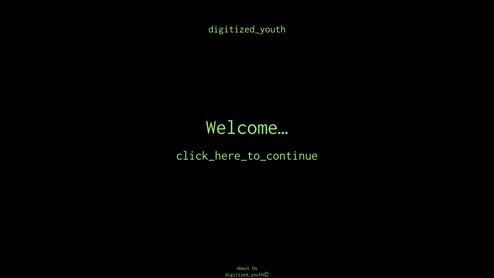
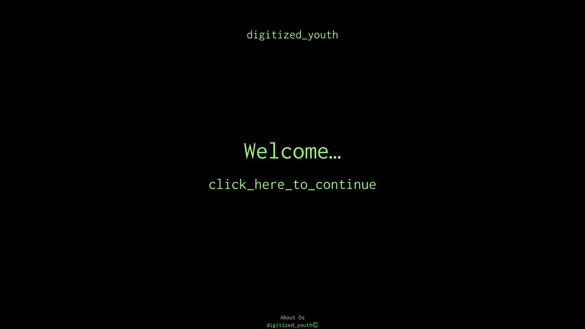

Hvem er Marius Schultz Ewers?
Opvækst:
Jeg blev født på Roskilde Hospital, men jeg er opvokset i Rødvig. Det er vigtigt for mig at folk ved hvor jeg kommer fra. Rødvig er en komplet anderledes opvækst end den man vokser op med i København. Jeg er vokset op med landskab og dyr, i et lille samfund hvor jeg har gået i klasse med de samme 15 mennesker siden 0. klasse. Hvis det ikke var for at jeg havde gået på efterskole i 10. klasse, havde jeg nok aldrig turde studere i København. Jeg lærte mig at omgås mange jævnaldrende på samme tid.
Interesser:
Mine interesser har altid været en stor del af mit liv. Siden jeg var helt lille var jeg fanatisk med Lego, som så senere ændrede sig til computerspil. Som efter skiftede til musik og grafik. Musikken udgør en stor del af min hverdag, jeg kan styre mit humør med den musik jeg vælger at sætte på. For mig betyder musikken alt. Min stil betyder også meget for mig. Jeg kan godt lide at udstråle præcis som jeg føler. Det er en måde man kan vise folk hvilken type man er uden verbal kommunikation. Det er dog ikke kun produktive hobbyer jeg bruger min tid på. I ny og næ finder jeg stadig tid til at ligge i sofaen en hel dag og spille PlayStation eller se serier.
Fremtidens Planer:
Eftersom musik og mode er det jeg går mest op i, er det de to brancher jeg godt kunne tænke mig at komme ind i. Det kunne være fedt at arbejde i et pladeselskab og stå for branding af den nyeste musik. Og det samme med mode, det kunne være fedt at stå for den digitale kreative retning kollektionen skal fremvises på.
 
